NSO Hands-On Adoption Workbook
~6 hours, 11 labs — build an NSO service that survives real drift, then drive NSO with natural language¶
For network engineers and automation leads working through a guided Cisco NSO hands-on lab with XRd peers — now extended with an NSO 6.7 MCP afternoon track.
Reference topology¶

Lab journey¶
| Lab | Title | Time | Description |
|---|---|---|---|
| 1 | Connect to the Workstation | 10 min | Access the lab VM and terminal |
| 2 | Install NSO and NEDs | 35 min | Local NSO install, environment, IOS-XR NED |
| 3 | Register XRd Routers | 20 min | Device definitions and sync-from |
| 4 | Configure Devices | 20 min | Push changes via NSO Web UI |
| 5 | Rollbacks | 20 min | Rollback files and revert commits |
| 6 | Out-of-Band Sync | 20 min | Detect and reconcile OOB changes |
| 7 | Device Groups & Templates | 25 min | Groups and templates at scale |
| 8 | Create a Service | 30 min | Python-and-template service package |
| 9 | RBAC Access Control | 30 min | intentional break Users, authgroups, NACM rules |
| 10 | NSO MCP — Setup and First Client | 80 min | NSO 6.7 + MCP server, web client, policy permit |
| 11 | NSO MCP — Service Models and BGP | 70 min | Load bgpmgr, configure BGP via natural language |
Two-day flow
Labs 1–9 run on the standard NSO 6.5 sandbox (Day 1). Labs 10–11 are a Day 2 continuation using the dCloud "NSO 6.7 MCP" scenario — a NSO release, and the new Model Context Protocol server. Each chapter declares its own NSO version in front-matter.
Before you begin
Provision your sandbox and open a console to the linux-host workstation. Commands assume that environment unless noted.
Lab Guide
Lab 1: Connect to the Workstation¶
Learning Objectives¶
By the end of this lab you will be able to:
- Connect to the Ubuntu lab desktop through the hosted Remote Access console.
- Open Visual Studio Code and use the integrated terminal on linux-host.
- Verify workstation identity using basic shell commands.
Time Budget¶
- Console & desktop — 3 min
- VS Code & terminal — 5 min
- Verify shell — 2 min
Total — 10 min
Prerequisites¶
- You can sign in to the hosted lab environment and open Remote Access (or equivalent) for this workbook.
- You have a modern browser; pop-up blockers are disabled or allow-listed for the lab portal if your site requires it.
Procedure¶
You will use the linux-host Ubuntu desktop and its integrated terminal for all following labs. Choose Ubuntu 24.04 Desktop unless your facilitator directs otherwise.
Step 1: Open the lab VM console¶
- From the lab environment, select Ubuntu 24.04 Desktop (recommended) or Win11 if you must use Windows for this session.
- Open VM Console from the Remote Access menu (wording may vary slightly by platform).
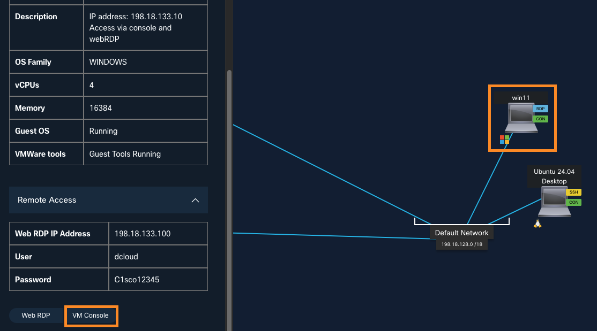
Wait until you see the desktop background and can move the pointer inside the VM.
Step 2: Orient yourself on the desktop¶
Alternatively, if you chose Ubuntu 24.04 Desktop, you will see a desktop similar to this:
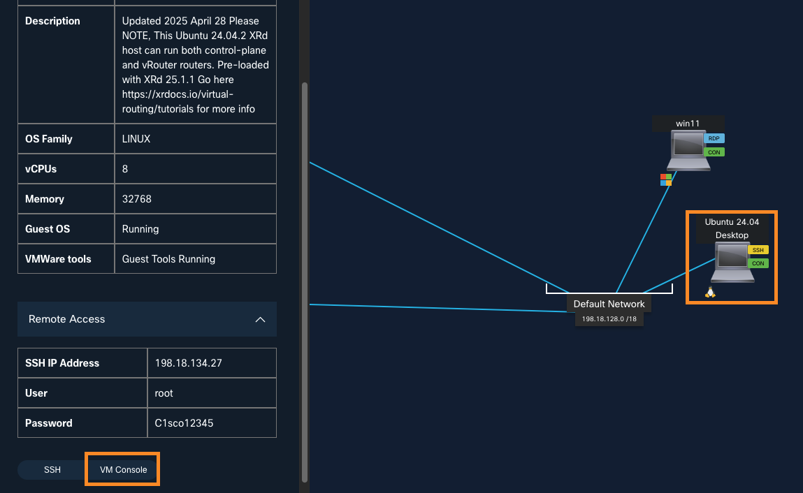
Step 3: Open Visual Studio Code and the integrated terminal¶
- Open Visual Studio Code from the applications menu or the dock.
- Open the integrated terminal (Terminal → New Terminal or the shortcut shown in your environment).

- Stay in this terminal for command examples in later labs.
Step 4: Confirm the workstation hostname¶
Run:
Expected output:
If the name differs, ask your facilitator—some environments use a different label, but the workflow is the same.
Verification¶
Confirm you are on xrd-host and the shell is responsive. Run these in order in the same terminal:
Expected output:
Common Errors¶
Symptom: Black or frozen VM console after Remote Access.
Cause Browser session timed out, GPU acceleration glitch, or console tab lost focus.
Fix Refresh the Remote Access page, close other heavy tabs, and reopen VM Console. If it persists, restore the VM snapshot.
Symptom: Integrated terminal in VS Code does not open or closes immediately.
Cause VS Code started before the desktop session finished loading, or extension host crashed.
Fix Quit VS Code fully and reopen from the menu. If needed, use an external terminal app temporarily and continue Lab 2 from there.
If the desktop or console is unusable after these steps, restore the lab VM snapshot and retry.
Lab 2: Install NSO and NEDs¶
Learning Objectives¶
By the end of this lab you will be able to:
- Locate and extract the NSO free-trial installer for the release pinned in this workbook (
6.5). - Perform a local NSO install, create an instance, and confirm the daemon is running.
- Install the Cisco IOS-XR NED package and reload packages in the Web UI.
Time Budget¶
- Extract installer — 5 min
- Install & instance — 22 min
- Web UI & NED — 8 min
Total — 35 min
Prerequisites¶
- Lab 1: Connect to the Workstation completed — you have a shell on linux-host.
- The NSO free-trial bundle for this workbook is available under your home directory (folder name may match
NSO-6.5-freeor your site’s layout — adjust paths below if your facilitator uses a different bundle).
Procedure¶
Step 1: Locate the installer files¶
Open VS Code and work in the Terminal panel (or any shell on linux-host).

Navigate to the NSO installer directory and list the available binaries:
Expected output:
ncs-6.5-cisco-asa-6.x-freetrial.signed.bin
ncs-6.5-cisco-ios-6.x-freetrial.signed.bin
ncs-6.5-cisco-iosxr-7.x-freetrial.signed.bin
ncs-6.5-cisco-nx-5.x-freetrial.signed.bin
nso-6.5-freetrial.container-image-build.linux.x86_64.signed.bin
nso-6.5-freetrial.container-image-prod.linux.x86_64.signed.bin
nso-6.5-freetrial.linux.x86_64.signed.bin
(Exact NED patch versions may differ; you need the Linux nso-…freetrial.linux.x86_64.signed.bin and the IOS-XR ncs-…-cisco-iosxr-….signed.bin.)
Step 2: Extract the NSO installer¶
Create a work directory and extract the signed installer (output is verbose; this can take a few minutes):
Step 3: Install NSO locally¶
Run the extracted installer with the --local-install flag:
Expected output:
INFO Using temporary directory /tmp/ncs_installer.XXXXXX to stage NCS installation bundle
INFO Unpacked ncs-6.5 in /home/cisco/NSO-INSTALL
INFO Found and unpacked corresponding DOCUMENTATION_PACKAGE
INFO Found and unpacked corresponding EXAMPLE_PACKAGE
INFO Found and unpacked corresponding JAVA_PACKAGE
INFO Generating default SSH hostkey (this may take some time)
INFO NCS installation complete
(Additional INFO lines about SSH keys, certificates, NETSIM, and ncsrc are normal.)
Step 4: Source the NSO environment¶
Step 5: Create an NSO instance¶
Expected output:
Step 6: Configure WebUI access¶
Starting with NSO 6.5, WebUI and RESTCONF may only allow access via the server hostname. To allow access by IP address, edit ncs.conf in your instance (for example ~/NSO-INSTALL/nso-instance/ncs.conf — confirm with your facilitator).
- Open
ncs.confand find the<webui>…</webui>block (create it under the top-level config if your template does not include it). - Inside
<webui>, add a<server-alias>whose value is the same IPv4 address learners will type in the browser (the management address of linux-host running NSO — not the router address from Lab 4).
Example (RFC 5737 documentation range — substitute your lab IP):
- Ensure the Web UI listens where you expect (often
<transport><tcp><ip>0.0.0.0</ip>… under<webui>). If your file already has TCP/WebUI transport settings, do not duplicate them — only add or fixserver-aliasso it matches the URL you publish in Step 9.
Security Note
Binding Web UI to 0.0.0.0 is for lab use only. In production, restrict access to specific interfaces.
Step 7: Start NSO¶
(No stdout is normal; the daemon starts in the background. Use the next step to confirm.)
Step 8: Confirm NSO is running¶
Expected output:
Step 9: Access the Web UI¶
Open Firefox and navigate to the login URL your environment provides. Example:
Default Credentials
Username: admin | Password: admin

After logging in, you will see the NSO main page showing Devices, Services, Config editor, and Tools tiles.

Navigate to the Config Editor section.

Step 10: Install the IOS-XR NED¶
Extract the NED package¶
Copy the NED archive into the instance¶
Expected output:
(No output on success; verify with ls ~/NSO-INSTALL/nso-instance/packages/ if needed.)
Reload packages in the Web UI¶
- Go to the NSO Web UI.
- Navigate to ncs:packages.
- Select Actions → Reload → Run reload action.

After reloading, you should see the cisco-iosxr-cli package in the list.

Verify
Open Devices — it should be empty until Lab 3.

Verification¶
Confirm the daemon and package reload:
Expected output:
In the Web UI, confirm ncs:packages lists cisco-ios-xr (name may vary slightly by build).
Common Errors¶
Symptom: Installer or ncs-setup fails with permission or existing directory errors.
Cause Prior partial install or wrong working directory leaves files in ~/NSO-INSTALL or work/.
Fix Stop NSO (`ncs --stop`), remove the partial trees after backup if needed, or restore the VM snapshot.
Symptom: Web UI returns connection refused or TLS errors after editing ncs.conf.
Cause Wrong server-alias IP, daemon not restarted, or firewall blocking the port.
Fix Fix `server-alias` to match how learners browse (IP vs hostname), restart `ncs`, and retest. Ask the class to use the exact URL you published.
Rollback
If you must discard this install and start over on the same VM (destructive):
If NSO will not start or packages will not reload after multiple attempts, restore the VM snapshot and repeat this lab.
Lab 3: Register XRd Routers¶
Learning Objectives¶
By the end of this lab you will be able to:
- Verify XRd Docker containers are running on the lab host.
- Load device definitions into NSO and confirm devices appear in the Web UI.
- Run sync-from to populate the NSO CDB with device configuration.
Time Budget¶
- Verify containers — 8 min
- Load devices & sync — 12 min
Total — 20 min
Prerequisites¶
- Lab 2: Install NSO and NEDs completed — NSO daemon is started and the cisco-ios-xr package shows in ncs:packages.
- You can open the NSO Web UI and run commands in a terminal on linux-host.
Procedure¶
Step 1: Verify XRd containers are running¶
Two XRd routers run as Docker containers on the same host. Confirm they are up:
Expected output:
CONTAINER ID IMAGE COMMAND CREATED STATUS NAMES
… ios-xr/xrd-control-plane:… "/usr/local/sbin/init" … Up … xr-2
… ios-xr/xrd-control-plane:… "/usr/local/sbin/init" … Up … xr-1
You should see xr-1 and xr-2 with the same ios-xr/xrd-control-plane image (tag may differ from the example). Other lab containers (for example source / dest) may appear — that is expected.
Step 2: Load device definitions¶
A prepared XML template defines both routers. From the bundle directory (adjust if your site places devices.xml elsewhere):
Expected output:
(Empty stdout is normal when load succeeds.)
| Flag | Meaning |
|---|---|
-l |
Load operation |
-m |
Merge with existing configuration |
Step 3: Verify devices in the Web UI¶
- Open the NSO Web UI.
- Click Devices.
- Confirm xr-1 and xr-2 are listed.
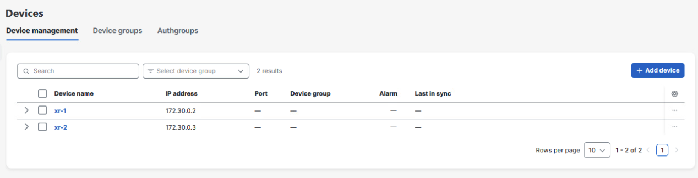
Step 4: Sync device configuration¶
The first action after adding devices is sync-from so the NSO CDB matches each device’s running configuration.
- Select all devices (or each device in turn).
- Execute sync-from.
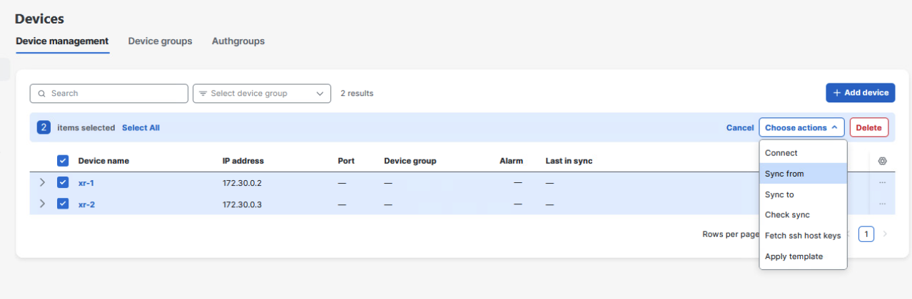
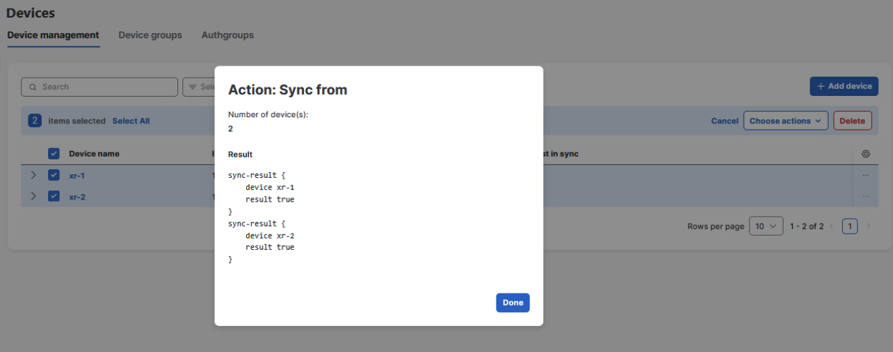
If sync-from fails
Run Fetch SSH Host Keys first, then retry sync-from.
After a successful sync-from, NSO’s CDB holds the full running configuration of both routers.
Verification¶
Confirm both devices appear in NSO (source the environment as in Lab 2, then run one non-interactive CLI session):
Expected output:
(Addresses and columns follow your lab’s devices.xml.)
Common Errors¶
Symptom: docker ps does not list xr-1 and xr-2.
Cause Containers stopped, Docker not running, or wrong host session.
Fix On linux-host: `docker ps -a` and start containers per your lab guide; if broken, restore the VM snapshot.
Symptom: sync-from fails with authentication or host key errors.
Cause SSH keys not fetched or management IP mismatch in NSO vs device.
Fix Run Fetch SSH Host Keys, verify addresses in `devices.xml`, retry sync-from. Restore the VM snapshot if CDB is corrupt.
If devices cannot be added or sync-from never succeeds after fetching SSH host keys, restore the VM snapshot and retry.
Lab 4: Configure Devices¶
Learning Objectives¶
By the end of this lab you will be able to:
- Navigate the NSO Web UI to a device configuration path on xr-1.
- Stage a candidate configuration change and commit it through Commit Manager.
- Verify the change on the device CLI.
Time Budget¶
- Web UI edit & commit — 10 min
- Device CLI verify — 10 min
Total — 20 min
Prerequisites¶
- Lab 3: Register XRd Routers completed — xr-1 and xr-2 show as unlocked and sync-from has succeeded at least once.
- You can open the NSO Web UI and SSH from linux-host to the device management address (your lab sheet lists the address).
Procedure¶
Step 1: Browse device configuration in the Web UI¶
Navigate to xr-1 in the Web UI to inspect interface configuration. Use the search bar or expand the configuration tree.
Follow this path to reach the GigabitEthernet IPv4 address container:
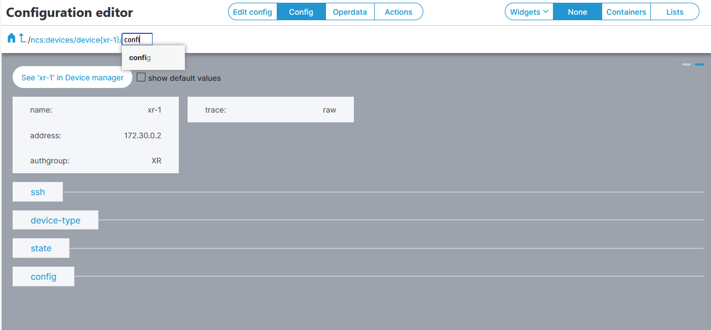
Step 2: Make a configuration change¶
- Click Edit Config.
- Change the IPv4 address from
10.1.1.3to10.1.1.30(documentation-style lab addressing).
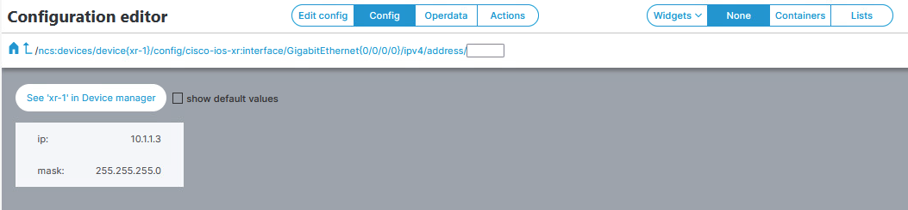
Candidate Configuration
A green bar appears on edited fields — this is candidate configuration. Changes apply to the device only after you commit.
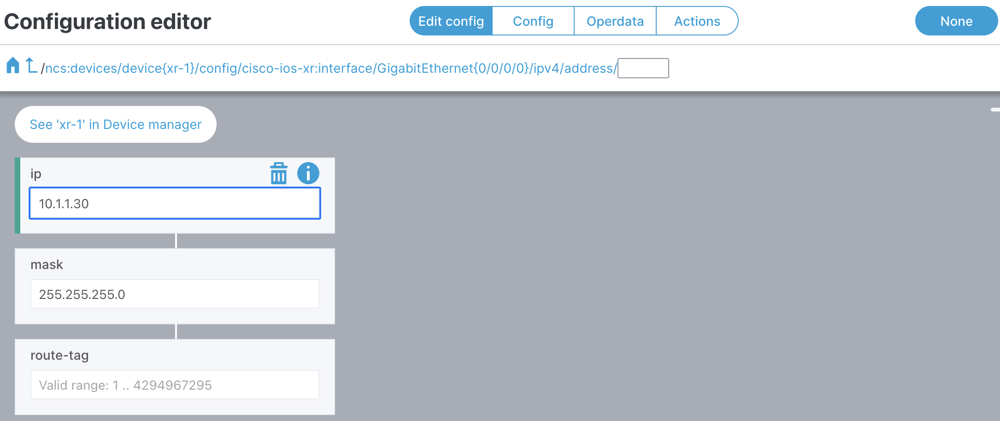
Step 3: Review and commit¶
- Open Tools → Commit Manager.
- Open the config tab for a diff view.
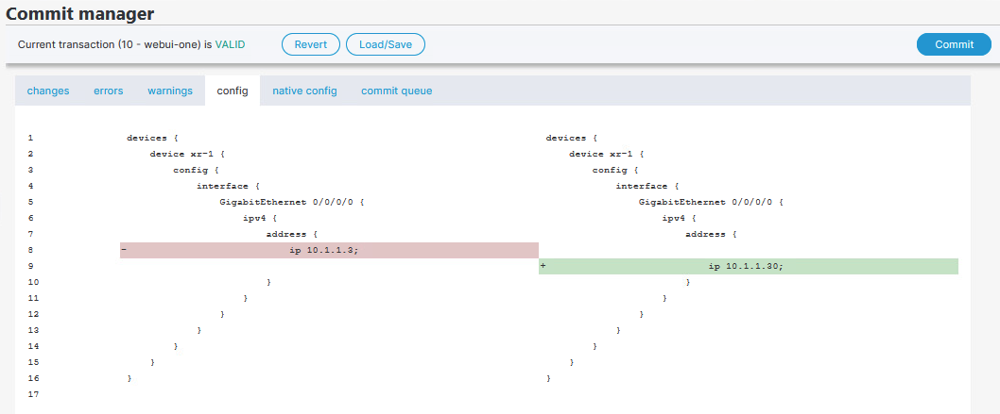
- Review the change, then click Commit.
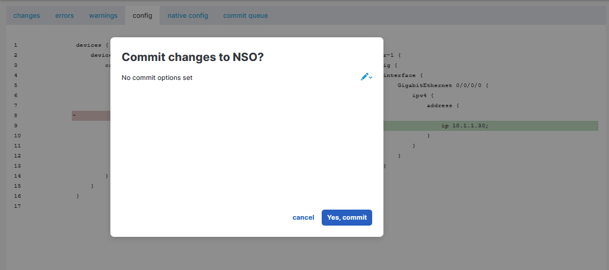
After commit, NSO creates a rollback file automatically (covered further in Lab 5).
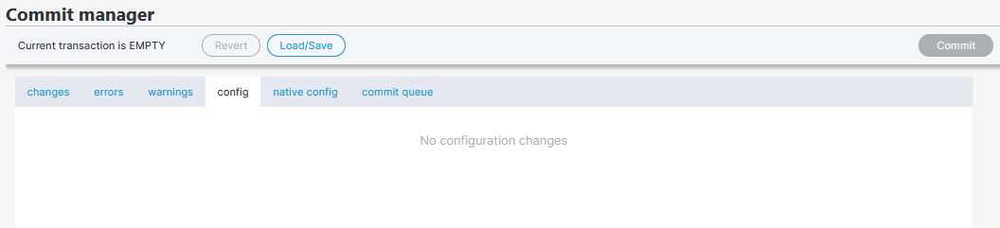
Step 4: Verify on the device¶
SSH to xr-1 and confirm the interface address in running configuration.
At the XR prompt, run:
Expected output:
(Timestamps and banner lines may appear above the interface block.)
Password
If prompted: cisco123 (or the password your facilitator provides).
Verification¶
From linux-host, confirm the committed value is visible in NSO (same shell environment as prior labs):
source ~/NSO-INSTALL/ncsrc
echo "show running-config devices device xr-1 config cisco-ios-xr:interface GigabitEthernet 0/0/0/0 ipv4 address" | ncs_cli -u admin -C
Expected output:
(Path or spacing may wrap differently; look for 10.1.1.30.)
If you already confirmed on the device CLI in Step 4, that counts as a second, independent check.
Common Errors¶
Symptom: Commit fails or device shows out-of-sync after commit.
Cause Another session holds a lock, or sync-from needed before edit.
Fix Close other NSO sessions, run check-sync, retry commit; see Lab 5 for rollback files.
Symptom: SSH to xr-1 refused or wrong interface output.
Cause Wrong management IP, routing from linux-host, or change not committed.
Fix Confirm IP in Web UI devices detail, ping from linux-host, re-check Commit Manager succeeded.
If commits leave the device and CDB out of sync, use Commit Manager rollbacks (see 5. Rollbacks).
Lab 5: Rollbacks¶
Learning Objectives¶
By the end of this lab you will be able to:
- Locate rollback metadata in Commit Manager and load a rollback file.
- Commit a loaded rollback as a new candidate and complete the workflow in Commit Manager.
- Verify on the device CLI that configuration matches the rolled-back state.
Time Budget¶
- Load rollback — 8 min
- Verify on device — 12 min
Total — 20 min
Prerequisites¶
- Lab 4: Configure Devices completed — at least one successful commit exists so NSO generated rollback files.
- You can open the NSO Web UI as admin and SSH from linux-host to xr-1 (use the management IP from your lab sheet; examples use 172.30.0.2).
Procedure¶
NSO creates a rollback file for every commit so you can revert configuration changes safely.
Step 1: Open Commit Manager¶
- Go to Commit Manager.
- Click Load/Save.
- Select the rollback file that corresponds to the state before the Lab 4 address change (metadata shows User, Northbound interface, timestamp — pick the rollback that restores 10.1.1.3 on the interface).
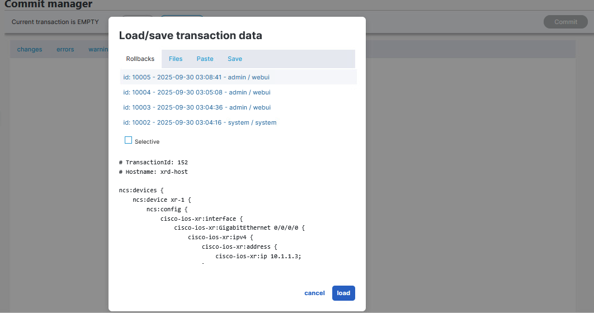
Step 2: Load the rollback¶
- Click Load — the revert appears as a candidate configuration.
- Review the diff: the rollback reverses Lab 4's change (10.1.1.30 removed → 10.1.1.3 restored).
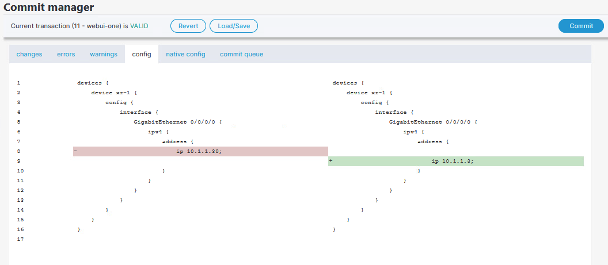
- Click Commit to apply.
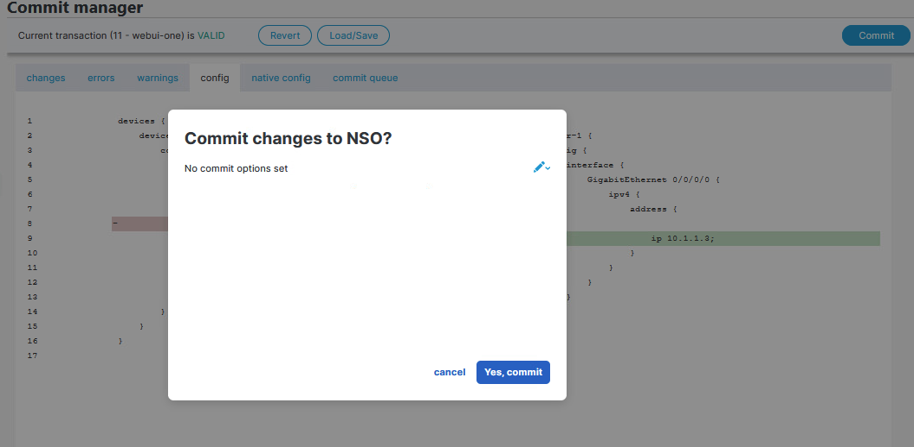
Step 3: Verify on the device¶
SSH to xr-1 and confirm the IPv4 address on the data interface is restored to 10.1.1.3.
(Replace with your lab management address.)
At the XR prompt:
Expected output:
(Timestamps and comments may vary.)
Key takeaway
Every NSO commit is reversible. Rollback files are your safety net when testing configuration changes.
Verification¶
Confirm the same address from NSO (optional second check):
source ~/NSO-INSTALL/ncsrc
echo "show running-config devices device xr-1 config cisco-ios-xr:interface GigabitEthernet 0/0/0/0 ipv4 address" | ncs_cli -u admin -C
Expected output:
Common Errors¶
Symptom: Load is greyed out or rollback list is empty.
Cause No prior commit in this session, or wrong NSO instance.
Fix Confirm you committed at least one change in Lab 4; check **Commit Manager** history and lab instructions for the correct instance path.
Symptom: Device still shows 10.1.1.30 after commit.
Cause Wrong rollback selected, or commit not applied to devices.
Fix Re-open the diff in Commit Manager, pick the rollback whose metadata matches the pre-change state, commit again, then re-run Check-Sync / sync-to if your site requires it.
Lab 6: Out-of-Band Sync¶
Learning Objectives¶
By the end of this lab you will be able to:
- Create a configuration change directly on xr-1 (out-of-band) without using NSO.
- Run Check-Sync in the Web UI to detect configuration drift.
- Use Sync-To to align the device with NSO and verify the loopback is removed.
Time Budget¶
- Out-of-band change — 10 min
- Detect & reconcile — 10 min
Total — 20 min
Prerequisites¶
- Lab 5: Rollbacks completed — Check-Sync should be green for xr-1 before you start.
- You can SSH from linux-host to xr-1 (examples use 172.30.0.2).
Procedure¶
One of NSO’s core workflows is detecting changes made on the device that did not go through NSO — out-of-band configuration.
Step 1: Create an out-of-band change on xr-1¶
SSH to xr-1 and configure Loopback100 on the device CLI (not through NSO).
At the XR prompt, use a configuration session like this (prompts and timestamps will match your session):
RP/0/RP0/CPU0:xr-1#configure terminal
RP/0/RP0/CPU0:xr-1(config)#interface Loopback 100
RP/0/RP0/CPU0:xr-1(config-if)#description out-of-band change
RP/0/RP0/CPU0:xr-1(config-if)#commit
RP/0/RP0/CPU0:xr-1(config-if)#end
Step 2: Verify the loopback on the device¶
Expected output:
Step 3: Detect drift in NSO¶
In the NSO Web UI, run Check-Sync on xr-1.
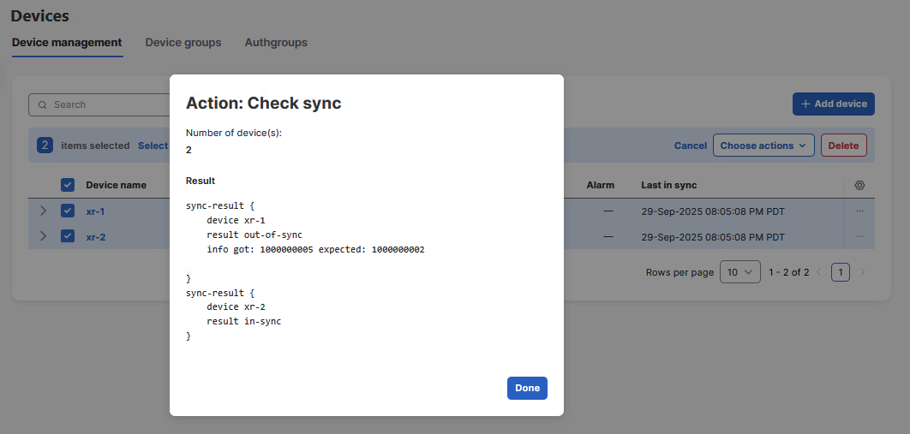
Out-of-sync alert
NSO typically shows a red indicator because the device differs from the CDB. Open Compare-config to see the out-of-band change.
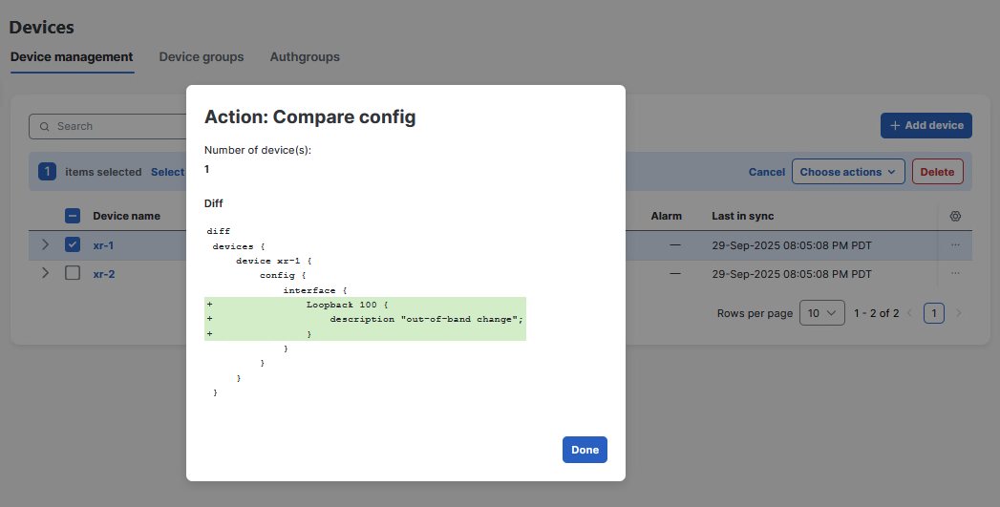
Step 4: Resolve with Sync-To vs Sync-From¶
| Option | Action | Result |
|---|---|---|
| Sync-From | Pull device config into NSO | NSO accepts the out-of-band change |
| Sync-To | Push NSO’s config to the device | Device matches NSO (drops OOB change) |
To remove the loopback and match the prior NSO-known state, use Sync-To.
Step 5: Execute Sync-To¶
- Select xr-1 in the Web UI.
- Open the actions menu and choose Sync to.
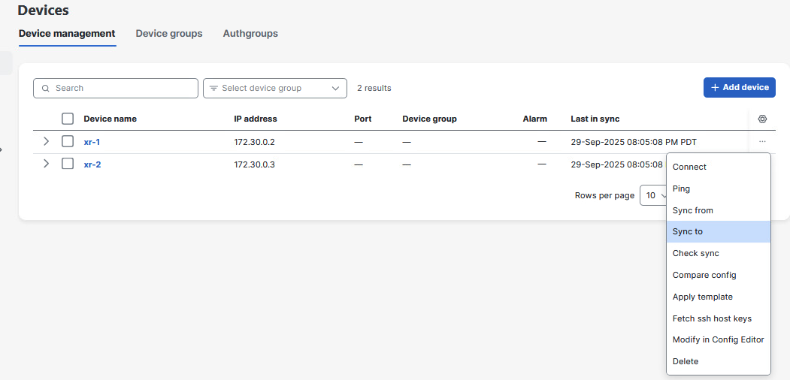
Step 6: Verify reconciliation¶
Run Check-Sync again — both devices should show in-sync.
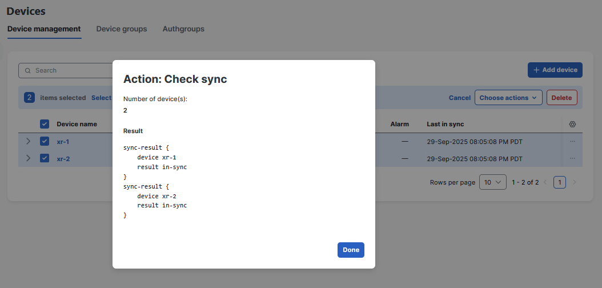
On the device:
Expected output:
The Loopback 100 configuration is gone — NSO restored the device to its known-good state.
Key takeaway
Use check-sync regularly; pair it with sync-from or sync-to deliberately — sync-from ingests reality, sync-to enforces the NSO-intended configuration.
Verification¶
Confirm xr-1 is clear of Loopback 100 and NSO agrees:
- In the Web UI, Check-Sync for xr-1 is green.
- On the device CLI:
Expected output:
Common Errors¶
Symptom: Check-Sync stays red after Sync-To or shows a looping diff.
Cause Concurrent edits, partial sync, or SSH session left in config mode on the device.
Fix Close extra sessions, run **Check-Sync** again, then **Sync-To** once; capture Compare-config for the instructor. Restore the VM snapshot if stuck.
Symptom: Loopback still present after Sync-To.
Cause Wrong device selected, or sync targeted a different NSO instance.
Fix Confirm **xr-1** address and authgroup; re-run **Sync-To** and verify with `show run interface Loopback 100` on the device.
Lab 7: Device Groups & Templates¶
Learning Objectives¶
By the end of this lab you will be able to:
- Create a device group that contains xr-1 and xr-2.
- Define a device template with IOS-XR DNS settings.
- Run Apply-Template for the group and verify DNS configuration on a device.
Time Budget¶
- Device group — 10 min
- Template & apply — 15 min
Total — 25 min
Prerequisites¶
- Lab 6: Out-of-Band Sync completed — both devices are in-sync and reachable.
- You can open Configuration Editor and Commit Manager as admin.
Procedure¶
Device groups and templates let you push configuration to multiple devices with one action.
Step 1: Create a device group¶
- Go to Devices → Device groups.
- Click + Add device group.
- Name it
ios-xr-devicesand click Create.
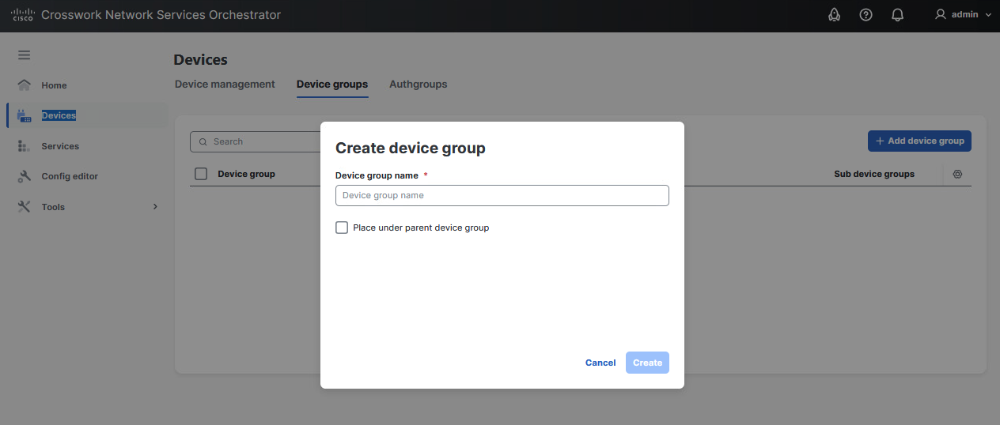
- Select xr-1 and xr-2, then + Add to device group.
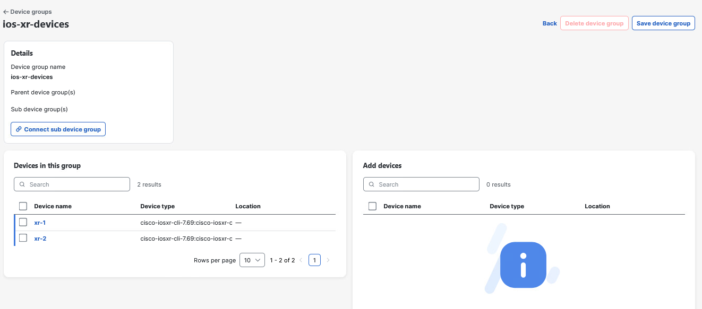
- Click Create device group.
Both devices should appear in ios-xr-devices.
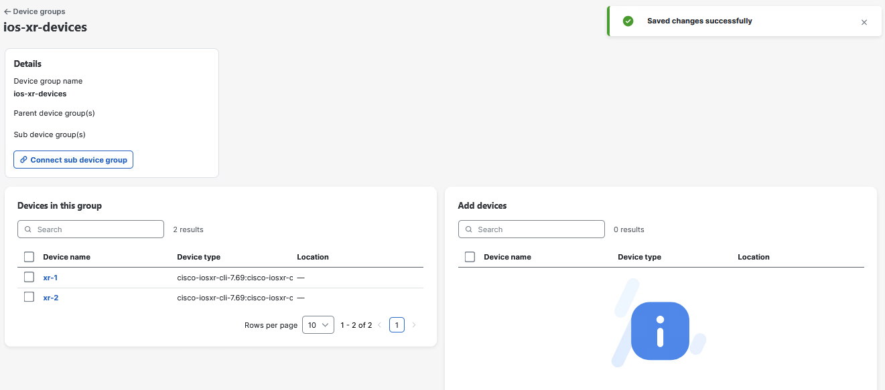
Step 2: Create a device template¶
- Open Configuration Editor.
- Select the ncs:devices module and click Edit config.
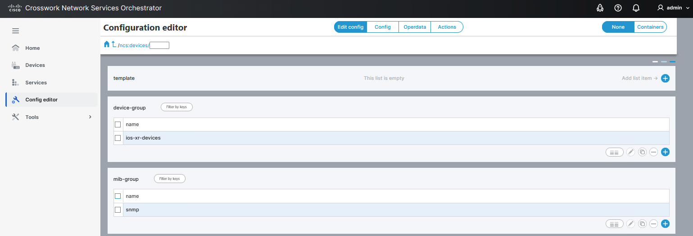
- In the template tile, click + add name 'set-dns'.
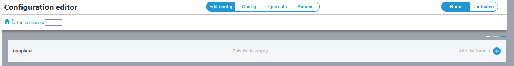
- Choose NED cisco-iosxr, then Confirm.
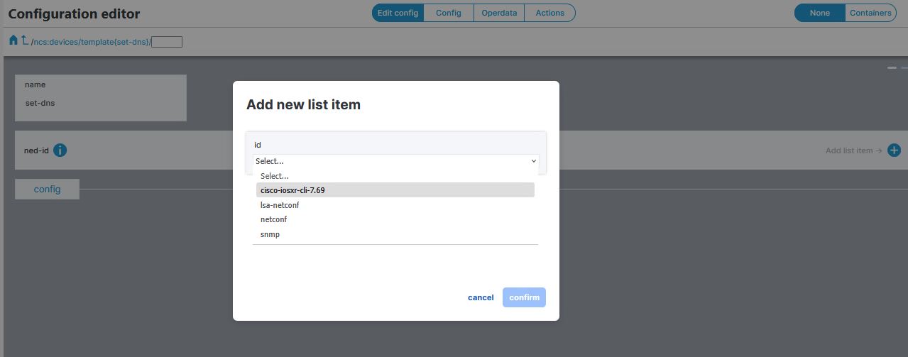
- Open the NED subtree to edit template content.
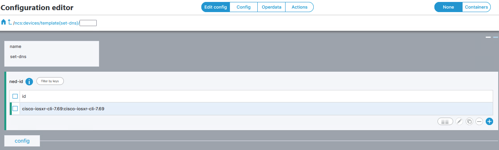
Step 3: Configure DNS in the template¶
- Navigate to Domain (path may read domain / Domain name depending on UI skin).
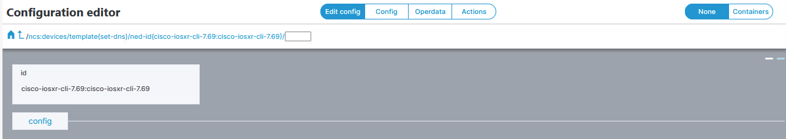
- Add a domain name and name-server IP (example:
2.2.2.2— documentation-style resolver).
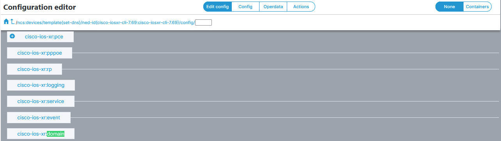
Step 4: Review and commit¶
- Open Commit Manager and review the diff — you should see the new device group and template objects.
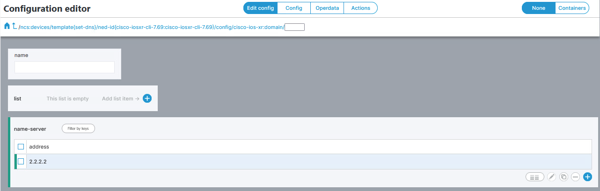
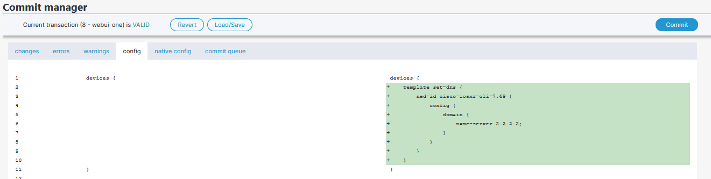
- Commit.
Step 5: Apply the template to the group¶
- In Configuration Editor → ncs:devices, open the device group
ios-xr-devices. - Click Actions.
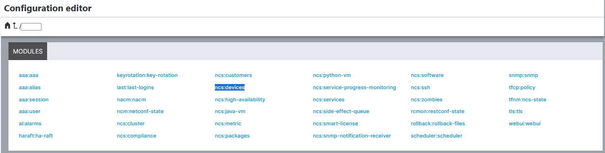
- Click Apply-Template.
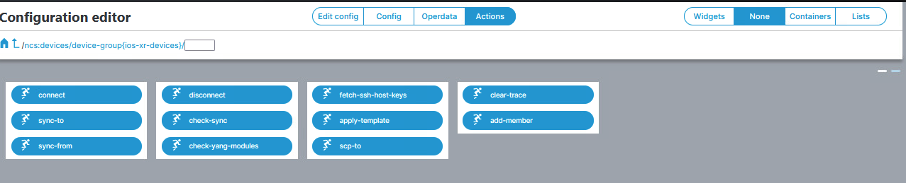
- Select your template name (scroll if needed).
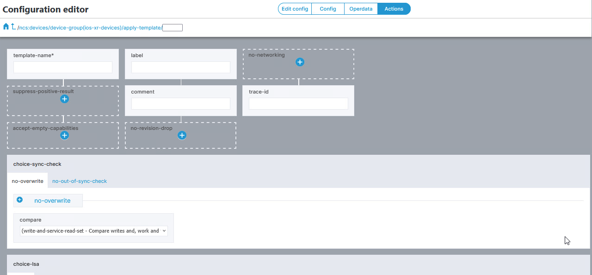
- Run Apply-Template.
The action result should show ok for each member device.
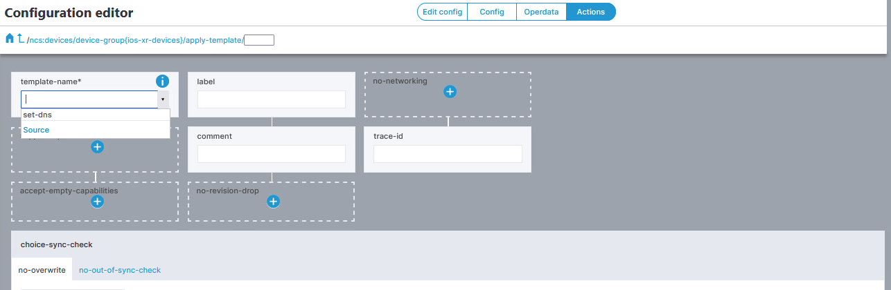
Templates vs services
Templates are flexible but lack service lifecycle semantics. Uncontrolled edits on devices can drift from the template intent — services (Lab 8) add structure and reconciliation.
Verification¶
On xr-1, confirm DNS settings from the template:
Expected output:
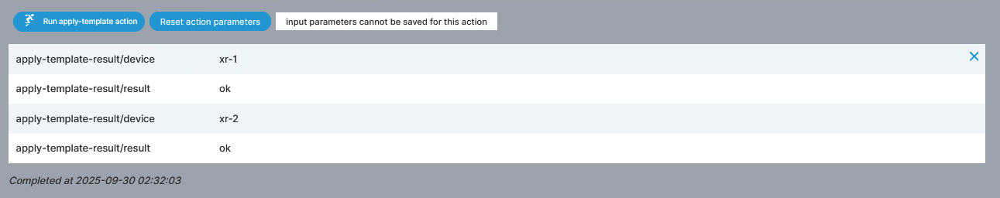
(Additional domain name lines may appear if you set them in the template.)
Common Errors¶
Symptom: Apply-Template returns failed or only one device updates.
Cause Authgroup mapping, device lock, or template path not committed.
Fix Verify both devices in the group share credentials; check Commit Manager for errors, then sync-from on failing device.
Symptom: show run domain is empty after a successful apply.
Cause Template targeted wrong NED branch or DNS not under domain in your IOS-XR model.
Fix Re-open the template in Configuration Editor, confirm **Domain** leaves exist in the diff, commit, and re-run Apply-Template.
If apply-template fails for all devices or leaves partial state, roll back the last commits or restore the VM snapshot.
Lab 8: Create a Service¶
Learning Objectives¶
By the end of this lab you will be able to:
- Generate a python-and-template service package with
ncs-make-package. - Define YANG inputs, map them into an IOS-XR XML template, compile, and reload packages.
- Deploy a service, intentionally remove configuration on devices to create drift, then re-deploy to restore intent.
Time Budget¶
- Service skeleton — 7 min
- Implement & test — 19 min
- Verify CLI — 4 min
Total — 30 min
Prerequisites¶
- Lab 7: Device Groups & Templates completed — you are comfortable with Commit Manager and device configuration.
- NSO instance path matches your environment (examples use
~/NSO-INSTALL/nso-instance/).
Procedure¶
Unlike templates, services attach lifecycle semantics: NSO tracks what a service applied and can detect drift when someone changes the network outside the service.
Context: services vs templates¶
| Feature | Template | Service |
|---|---|---|
| Push config to multiple devices | Yes | Yes |
| Detect if config was changed | No | Yes (check-sync) |
| Re-deploy to restore config | No | Yes |
| Rollback service-level changes | No | Yes |
Step 1: Inspect ncs-make-package¶
Expected output:
(Use ncs-make-package -h without piping if your shell lacks head.)
Step 2: Create the service skeleton¶
Run the generator inside the instance packages/ directory so you do not need to move folders afterward.
Run inside packages/
If you generate elsewhere, copy the resulting folder into ~/NSO-INSTALL/nso-instance/packages/ before compiling.
cd ~/NSO-INSTALL/nso-instance/packages/
ncs-make-package --service-skeleton python-and-template STATIC
Step 3: Understand the package layout¶
Open the project in VS Code and expand the explorer to the packages folder.

After the script finishes, STATIC/ should resemble:
STATIC/
├── package-meta-data.xml
├── src/
│ └── yang/
│ └── STATIC.yang
├── templates/
│ └── STATIC-template.xml
└── python/
└── STATIC/
└── main.py

package-meta-data.xml contains the service version and other metadata.

Step 4: Capture XML with commit dry-run¶
Build the target IOS-XR static route in the NSO CLI, then export XML with commit dry-run outformat xml — do not leave the candidate committed.
Example session (prompts may differ):
admin@ncs# config
admin@ncs(config)# devices device xr-1 config
admin@ncs(config-config)# router static
admin@ncs(config-static)# address-family ipv4 unicast
admin@ncs(config-static-afi)# 11.11.11.11/32 10.1.1.2 metric 100 description "set by NSO"
admin@ncs(config-static-afi)# commit dry-run outformat xml
You should see XML shaped like the fragment below (namespaces may vary by NED build):
<devices xmlns="http://tail-f.com/ns/ncs">
<device>
<name>xr-1</name>
<config>
<router xmlns="http://tail-f.com/ned/cisco-ios-xr">
<static>
<address-family>
<ipv4>
<unicast>
<routes-ip>
<net>11.11.11.11/32</net>
<address>10.1.1.2</address>
<metric2>
<metric>100</metric>
</metric2>
<description>set by NSO</description>
</routes-ip>
</unicast>
</ipv4>
</address-family>
</static>
</router>
</config>
</device>
</devices>
Do not commit the dry-run candidate
Exit without committing the exploratory static route — answer no if asked to commit, or end / exit per your CLI help.
Step 5: Populate the service template¶
The generated skeleton includes an XML template and a YANG model — you will edit both.
This is what we will find in the XML file:

And this is what we will find on the YANG file:

Copy only the router subtree (inside <config>) into STATIC-template.xml:
<router xmlns="http://tail-f.com/ned/cisco-ios-xr">
<static>
<address-family>
<ipv4>
<unicast>
<routes-ip>
<net>11.11.11.11/32</net>
<address>10.1.1.2</address>
<metric2>
<metric>100</metric>
</metric2>
<description>set by NSO</description>
</routes-ip>
</unicast>
</ipv4>
</address-family>
</static>
</router>
Step 6: Add YANG variables¶

Update STATIC-template.xml¶
Reference those leaves with your template engine’s variable syntax:
- Destination prefix (for example
11.11.11.11/32->{/dest-prefix}) - Forwarding address (for example
10.1.1.2->{/fwd-address}) - Metric (default 100 ->
{/metric}) - Description (default
set by NSO->{/description})

Update STATIC.yang¶
Make dest-prefix and fwd-address mandatory; give metric and description defaults (exact syntax follows your YANG tutorial).

// replace with your own stuff here
leaf dest-prefix {
type inet:ipv4-prefix;
mandatory true;
}
leaf fwd-address {
type inet:ipv4-address;
mandatory true;
}
leaf metric {
type uint16;
default "100";
}
leaf description {
type string;
default "set by NSO";
}
Step 7: Compile the package¶
Expected output:
(Warnings policy depends on your flags; --fail-on-warnings may stop the build if YANG has issues.)
Step 8: Reload packages¶
- Web UI → ncs:packages → Actions → Reload.
- Confirm result is true.

- Verify package STATIC appears.

Step 9: Deploy the service instance¶
-
Homepage → Services.
-
Select the STATIC service.

- + Add service — click the + button.

- Name it (for example
static-11.11.11.11) and fill dest-prefix, fwd-address.

Service created — now attach devices.

- Attach devices xr-1 and xr-2 (defaults for metric/description if shown).

- Commit Manager → config — inspect diff; use native config if offered.


- Commit.
Step 10: Test lifecycle (intentional drift)¶
- Service Manager — service should be green / in-sync after commit.

- Simulate a problem (required for this lab): on each device, Device Manager → Edit Config, delete the static route the service applied.

- Commit the deletion on the device context.

- Return to Service Manager → Check-Sync — expect a red / out-of-sync indication.


- Run Re-deploy on the service — NSO should push intent back to devices until the service is green again.


Key takeaway
Services are self-healing for configuration they own: drift is visible, and re-deploy reapplies the service’s intended configuration.
Verification¶
On xr-1, confirm the static route exists after re-deploy (documentation address — use yours):
Expected output:
router static
address-family ipv4 unicast
11.11.11.11/32 10.1.1.2 description "set by NSO" metric 100
Common Errors¶
Symptom: make fails or STATIC.fxs is missing after compile.
Cause YANG error, wrong NED namespace in template, or wrong working directory.
Fix Run `make clean` if present, fix YANG/XML per compiler errors, rebuild from `STATIC/src`.
Symptom: Service stays red after re-deploy or devices reject the route.
Cause Overlapping static routes, VRF mismatch, or device not in service device list.
Fix Verify service instance targets **xr-1** / **xr-2**, check device trace logs, roll back last service commit if needed.
Rollback
To remove this lab’s STATIC package and instance (destructive — coordinate with your class):
Then Reload packages in the Web UI and confirm STATIC is gone.
If re-deploy cannot clear drift or the service model is inconsistent, use Commit Manager rollbacks first, then restore the VM snapshot if you need a clean start.
Lab 9: RBAC Access Control¶
Learning Objectives¶
By the end of this lab you will be able to:
- Create a local NSO user and attach it to device credentials through an authgroup.
- Configure NACM groups, rule-lists, and rules that target paths with XPath.
- Log in as a restricted user and confirm allowed vs denied actions in the Web UI.
Time Budget¶
- Users & authgroups — 10 min
- NACM rules — 15 min
- Broaden rule — 5 min
Total — 30 min
Prerequisites¶
- You can log in to the NSO Web UI as admin and open Configuration Editor for aaa, nacm, and devices.
- Device definitions for xr-1 / xr-2 use management addresses consistent with your lab (examples use 172.30.0.2 for xr-1 in XPath samples).
Procedure¶
NSO combines AAA users, authgroups (device credential mapping), and NACM (northbound access rules) for fine-grained control.
Step 1: Create a read-only test user¶
- Open Configuration Editor → aaa:aaa.
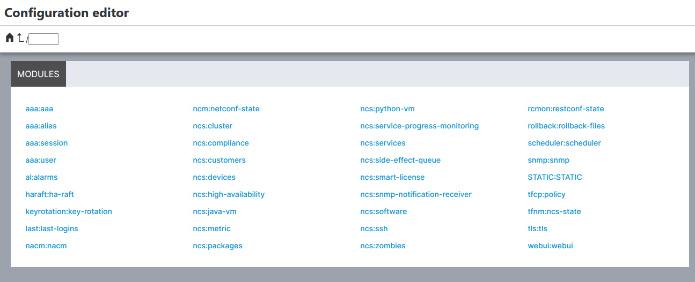
- Navigate to authentication → users, click Edit config, then + to add a user.
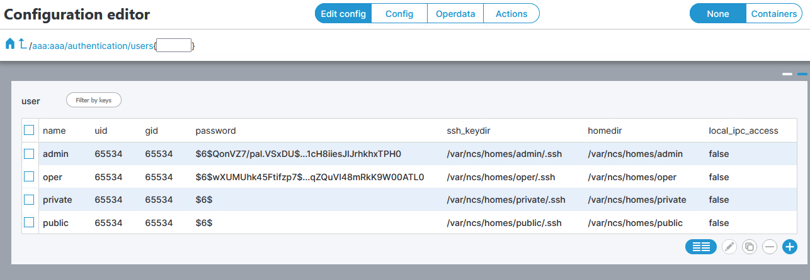
- Create
read_user(password per your lab policy).
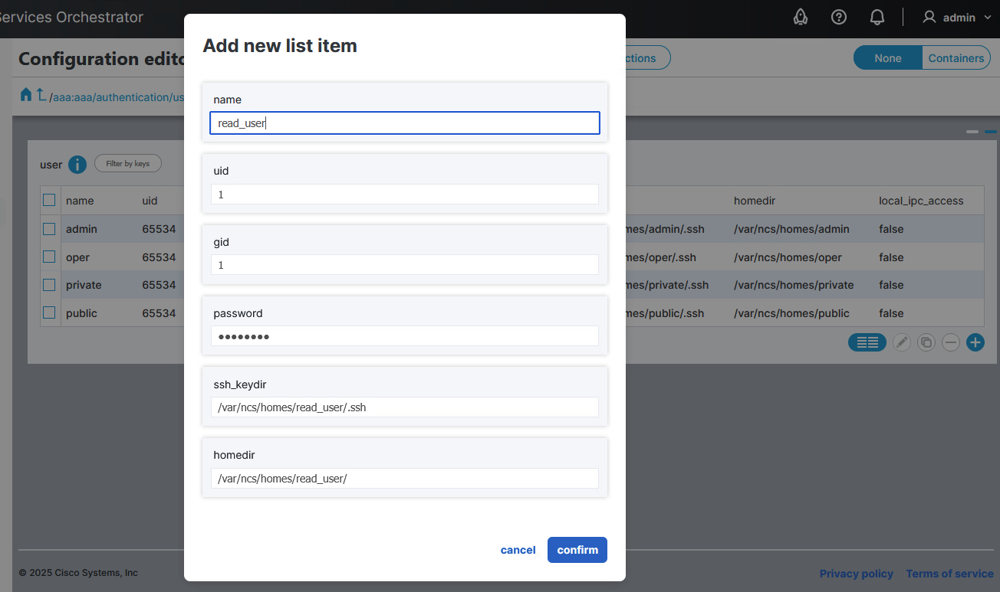
- Commit.
You can log out and confirm login as read_user (limited until NACM is configured).
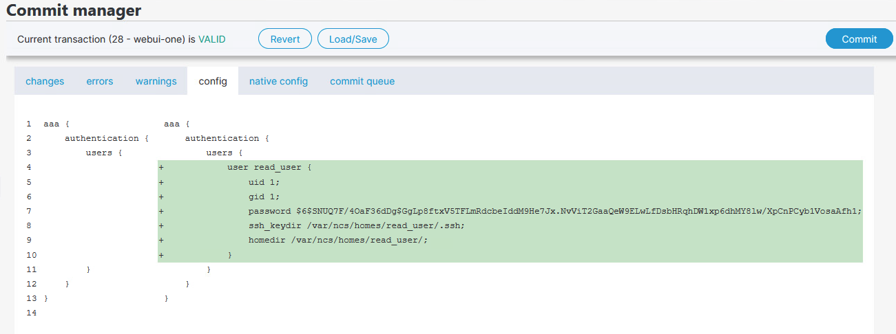
Step 2: Map the user through an authgroup¶
As read_user, open Device Manager — note that ping fails because the user has no authgroup mapping yet.
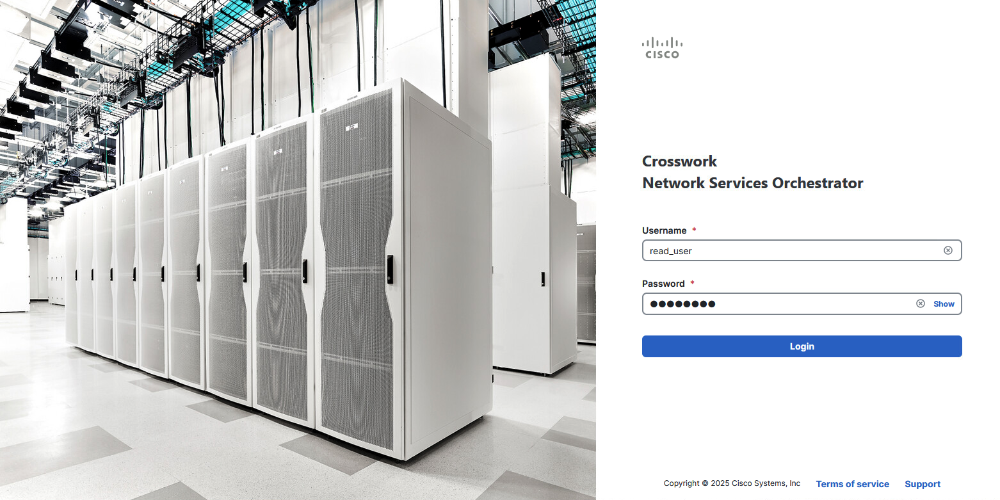
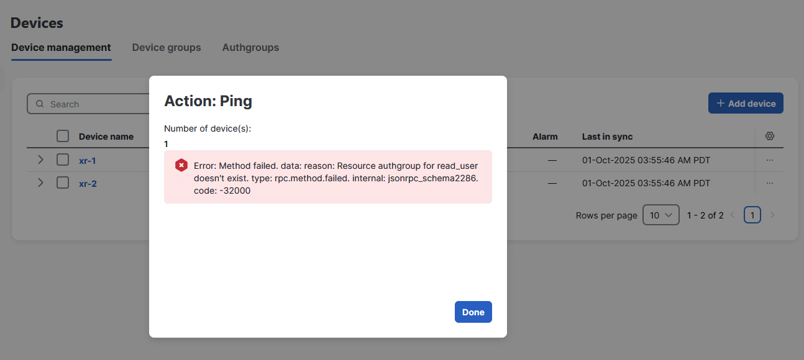
Log back in as admin to fix this:
- Open Configuration Editor → ncs:devices → authgroup (select the group your devices use, often
XR).
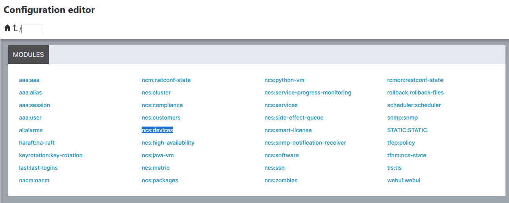
- Inside the authgroup, locate the umap section (maps NSO users to device credentials).
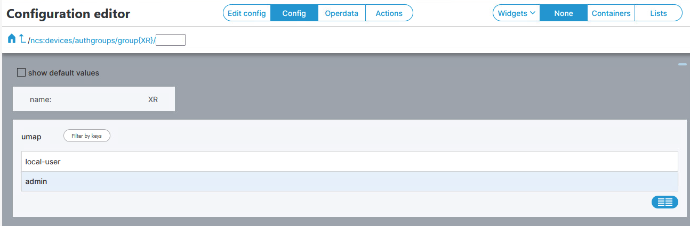
- Add
read_userwith remote-name / remote-password matching device login (admin/cisco123in many labs).
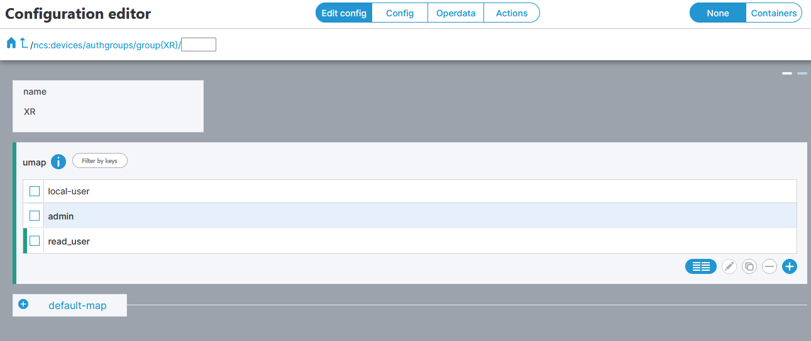
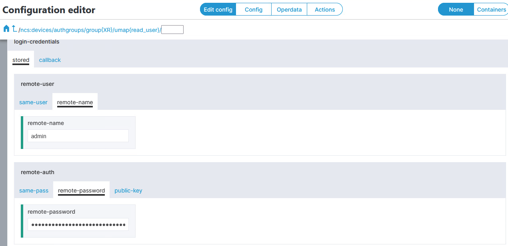
- Commit.
Log in as read_user and open Device Manager — you should now reach connect, ping, and check-sync.
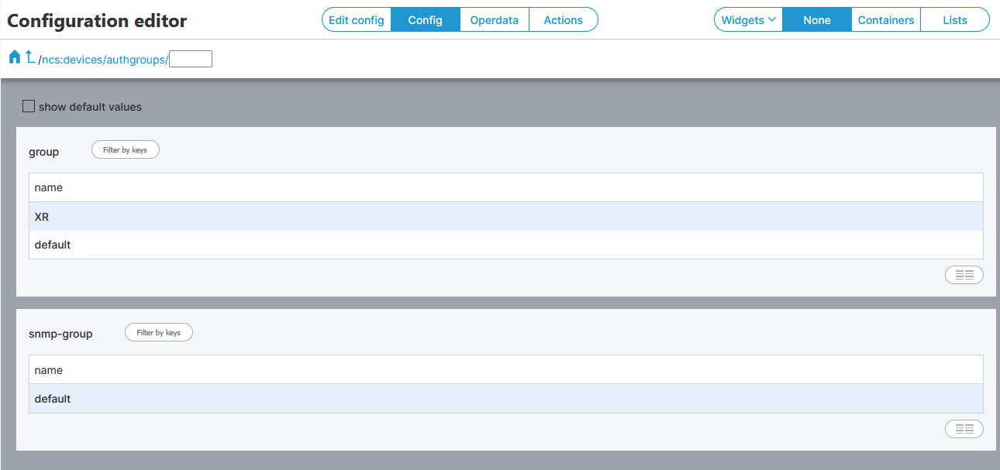
Step 3: Create a NACM group and rule-list¶
- Log in as admin.
- Open Configuration Editor → nacm:nacm.
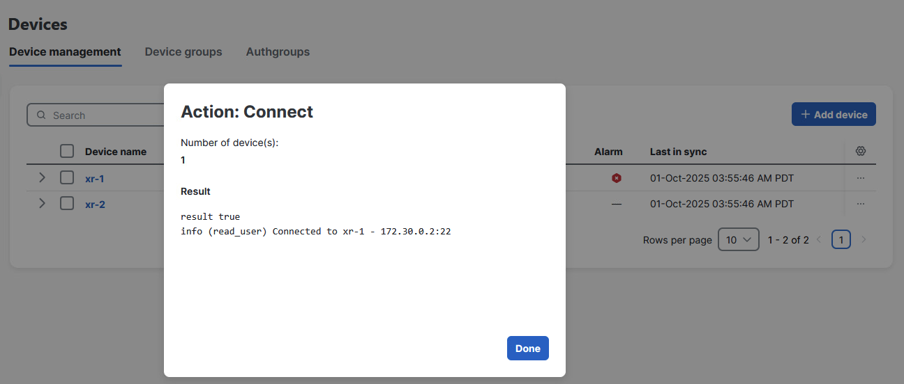
The NACM module contains rule-list and groups sections.
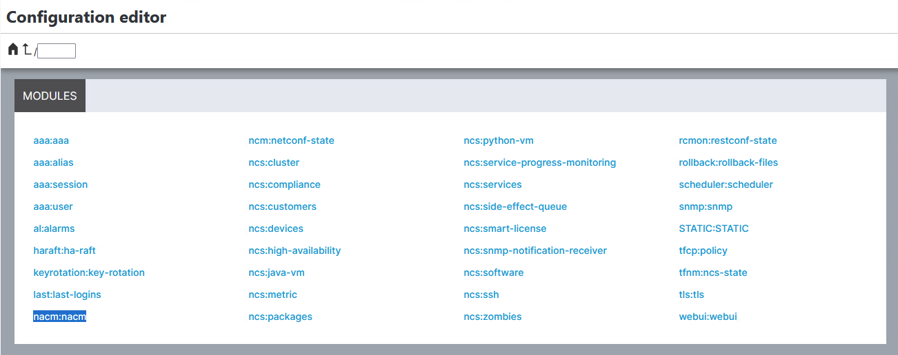
- Create
read_group.
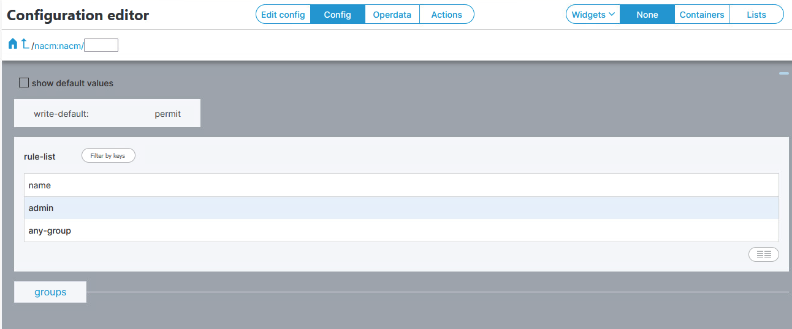
- Assign group-id (for example
1) and add userread_user.
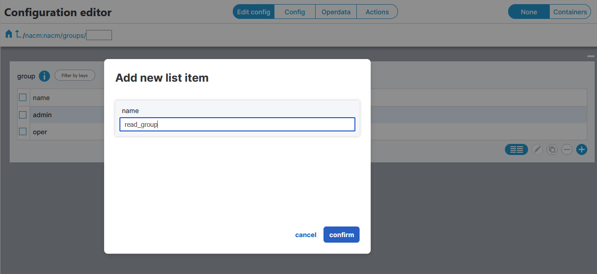
- Under rule-lists, create
read_rule.
- Attach
read_groupso all rules in the list apply to that membership.
Step 4: Discover XPath targets¶
Use the NSO CLI to print XPath forms of configuration (paths vary slightly by release):
Expected output:
(Truncated — you need the /devices/device[...] prefixes for rules.)
For deeper paths:
source ~/NSO-INSTALL/ncsrc
echo "show running-config devices device xr-1 | display xpath" | ncs_cli -u admin -C
Expected output (illustrative — addresses follow your lab):
/devices/device[name='xr-1']/address 172.30.0.2
/devices/device[name='xr-1']/authgroup XR
/devices/device[name='xr-1']/device-type/cli/ned-id cisco-iosxr-cli-7.69
Access operations
Use the UI help on access-operations to see create, update, delete, exec, and related keywords for your release.
Step 5: Create a deny rule for domain configuration on xr-1¶
Inside the rule-list you have two options: cmdrule (command authorization) and rule (data/rpc authorization).
- Inside
read_rule, add a rule to deny sync-from or domain access.
- In the rule data-node, set the path using the XPath from Step 4:
/devices/device[name='xr-1']/config/cisco-ios-xr:domain - Action:
deny - Access-operations:
create,update,delete,exec(adjust to your NACM schema).
Use the info button on access-operations to see all available keywords.
- Commit.
Step 6: Test as read_user¶
- Log out, then log in as
read_user. - Open Device Manager.
You should observe:
- sync-from may be hidden or disabled (depending on remaining default rules).
- On xr-1, domain configuration is not visible or not editable.
- On xr-2, domain may still appear if the rule only names xr-1.
Step 7: Broaden the rule to all devices¶
- Log in as admin.
- Change the rule path from: to:
- Commit.
Log in as read_user again — domain should be hidden on all managed devices covered by the rule.
Key takeaway
NACM rules target XPath expressions — from entire subtrees down to single leaves — to control who can see or change configuration.
Verification¶
Confirm read_user still exists (admin session):
source ~/NSO-INSTALL/ncsrc
echo "show running-config aaa authentication users user read_user" | ncs_cli -u admin -C
Expected output:
(Additional password / key lines may follow — you only need to see the read_user stanza.)
Confirm NACM rules in the Web UI under Configuration Editor → nacm:nacm — read_rule should list deny-config-domain. Optional CLI (output varies):
source ~/NSO-INSTALL/ncsrc
echo "show running-config nacm rule-list read_rule" | ncs_cli -u admin -C
Common Errors¶
Symptom: read_user sees the same UI as admin or changes still apply after…
Cause Session cache, wrong user, or rule path typo / wrong NACM group attachment.
Fix Log out fully, clear site data if needed, re-check **groups** ↔ **read_user** mapping and XPath spelling (including namespace prefix).
Symptom: ncs_cli XPath commands return errors or empty.
Cause Wrong `-u` user, environment not sourced, or display xpath not supported in your build.
Fix Run `source ~/NSO-INSTALL/ncsrc` first; use **Configuration Editor** copy-path features as a fallback.
If you lock yourself out or rules conflict, log in as admin and revert the last NACM commits in Commit Manager.
What's Next¶
Lab 9 closes the Day 1 track: you now have NSO operating with proper user, authgroup, and NACM separation — the foundation a production deployment needs.
The Day 2 afternoon session shifts to NSO 6.7 and its new Model Context Protocol (MCP) server. In Lab 10: NSO MCP — Setup and First Client, you will spin up NSO 6.7 in the dCloud "NSO 6.7 MCP" scenario, expose it via MCP, and drive it from a web-based natural-language client — then in Lab 11, use that same client to configure BGP through a custom service package.
Lab 10: NSO MCP — Setup and First Client¶
Day 2 — Afternoon session
Day 2 morning covered **RBAC** and the full lifecycle of NSO administration (Labs 5–9). This afternoon session pivots to **NSO 6.7**, where the headline feature is the **Model Context Protocol (MCP) server**. You will set up a fresh NSO 6.7 instance, expose it through MCP, and drive NSO with a natural-language client — all in the dCloud all-in-one scenario.
NSO version difference
Labs 1–9 use NSO 6.5. This lab and Lab 11 require **NSO 6.7 LTS**, which is the version bundled in the dCloud "NSO 6.7 MCP" scenario. Commands and paths in this chapter reference `NSO-6.7-LTS-free/` explicitly because MCP is only available from 6.7 onward.
Learning Objectives¶
By the end of this lab you will be able to:
- Describe the three building blocks MCP exposes: resources, tools, and prompts.
- Install NSO 6.7 on the dCloud Ubuntu host via the provided Ansible playbook and confirm both XRd routers are in sync.
- Install the NSO MCP package, enable the MCP server, and verify it with the bundled
test-mcp.shscript (all 5 tests passing). - Launch the sample web MCP client (
backend.py+ Streamlitfrontend.py) and interact with NSO using natural language through a browser. - Switch the MCP policy from the default
restricted(~11 tools) topermit(100+ tools) and observe the larger surface area.
Time Budget¶
- What is MCP? — 8 min
- Setup NSO 6.7 — 20 min
- Install MCP package — 20 min
- Run web client — 18 min
- Change policy — 14 min
Total — 80 min
Prerequisites¶
- Lab 9: RBAC Access Control completed — the Day 2 morning track is done.
- Your dCloud session for NSO 6.7 MCP — Demo is Active.
- You can open the VM Console of Ubuntu 24.04 Desktop.
What is MCP?¶
The Model Context Protocol (MCP) acts as a universal translator between data sources and AI applications. NSO 6.7 can act as an MCP server and exposes three primitives:
| MCP primitive | What NSO provides |
|---|---|
| Resources — schema and data | global-settings, zombies, device settings and configurations |
| Tools — executable functions the LLM can call | Configurable via mcp-policies (the policy decides which tools are exposed) |
| Prompts — pre-defined templates | Seven prompts shipped with the NSO MCP server |
In this lab, a custom MCP client (used later in the procedure) connects to NSO and leverages Cisco AI to provide an AI interface through a web browser.
Procedure¶
Rollback
This lab is not idempotent — it installs NSO 6.7 fresh and enables the MCP server with a permissive policy. To roll back the MCP changes without reinstalling NSO, in the NSO CLI:
admin@ncs# config t
admin@ncs(config)# no mcp-server enabled
admin@ncs(config)# mcp-server policies default-action restricted
admin@ncs(config)# commit
To fully undo the install, the simplest path in the dCloud scenario is to end the dCloud session and restart it — the Ansible playbook will reprovision the host.
Step 1: Validate the running NSO 6.5 instance and shut it down¶
Before moving to the new dCloud scenario you must cleanly stop the NSO 6.5 instance that has been running throughout Labs 1–9. Work on the xrd-host terminal you have been using all day.
Source the NSO 6.5 environment and confirm the version:
The output must show 6.5 — this confirms the correct environment is sourced.
Stop the NSO 6.5 daemon:
Verify the daemon is no longer listening:
Expected output:
connection refused means NSO 6.5 has stopped cleanly. You can now proceed to the new dCloud scenario that bundles NSO 6.7.
Step 2: Open a terminal on the Ubuntu host¶
Once the dCloud scenario is active, open the VM Console of Ubuntu 24.04 Desktop.
On Ubuntu, open Terminal.
Step 3: Install NSO 6.7 with the provided Ansible playbook¶
Wait a few minutes for the playbook to complete — NSO will be installed automatically.
Once it finishes, source the environment and open the NSO CLI:
Step 4: Confirm the XRd routers are reachable¶
Inside the NSO CLI, sync both XRd devices and verify they are present:

If either device fails to sync, stop here and resolve before continuing — MCP needs a working device tree to expose meaningful tools.
Step 5: Install the NSO MCP package¶
The MCP package is included in the NSO installer bundle. From the Linux terminal (not the NSO CLI), copy it into the packages directory:
Then in the NSO CLI, reload packages and enable MCP:
admin@ncs# packages reload
admin@ncs# config t
admin@ncs(config)# mcp-server enabled
admin@ncs(config)# commit
admin@ncs(config)# end
Step 6: Verify the MCP server with the bundled test script¶
The MCP package contains a test-mcp.sh test script. Confirm MCP is up and running:
cd
tar zxvf NSO-6.7-LTS-free/work/ncs-6.7-cisco-nso-adaptive-mcp-server-1.0.0.tar.gz
cd cisco-nso-adaptive-mcp-server
./test-mcp.sh
If any test fails, go back to the NSO CLI, run packages reload again, and re-run ./test-mcp.sh. Continue only when all 5 tests pass.
NSO MCP is now ready.
Step 7: Start the web MCP client (backend + frontend)¶
The scenario includes a sample web MCP client. It runs as two programs in two terminal tabs.
Terminal tab 1 — backend:
Terminal tab 2 — frontend (open a new tab, then):
Firefox should open automatically. If not, launch Firefox manually and browse to http://localhost:8501/.
Confirm the NSO MCP tools appear in the left-hand menu of the web UI:

Step 8: Drive NSO with natural language¶
In the chat box, ask NSO about its devices in plain English (e.g. "List the devices managed by NSO.").
Step 9: Change the MCP policy from restricted to permit¶
By default, for security reasons, the active MCP policy is restricted — it exposes only 11 tools. Switch the default action to permit so more tools become available.
In the NSO CLI:
$ ncs_cli -Cu admin
admin@ncs# config t
admin@ncs(config)# mcp-server policies default-action permit
admin@ncs(config)# commit
admin@ncs(config)# end
Back in the web MCP client, press Refresh tools in the left menu. You should now see more than 100 tools:

You can now run richer queries — for example, ask the client to show live-status of a device:
Production policy
permit exposes a very large surface area to whichever LLM is on the other end of the MCP connection. Use restricted (or a hand-curated policy) for anything other than demo / lab scenarios.
Verification¶
You should now have:
- NSO 6.7 LTS installed on the Ubuntu host, with both XRd routers in sync-from: true.
- NSO MCP package loaded, MCP server enabled in the running config.
-
./test-mcp.shreporting 5/5 tests passed. - The web MCP client running on http://localhost:8501/ with the NSO tool menu populated.
- MCP policy switched to
permit— the tool count in the left menu jumps from ~11 to 100+.
Troubleshooting¶
test-mcp.shfails — runpackages reloadin the NSO CLI, wait for it to finish, and re-run the test script.- No tools visible in the web client — the policy may still be
restrictedand connection-scoped. Confirmmcp-server policies default-action permitwas committed, then press Refresh tools. - Streamlit page won't load — verify both
backend.pyandstreamlit run frontend.pyare running in their own terminal tabs with the venv activated.
Common Errors¶
Symptom: `./test-mcp.sh` reports fewer than 5 passing tests after `packages reload`.
Cause MCP package partially loaded — `mcp-server enabled` was committed before `packages reload` finished, or the tarball was not copied into `ncs-run/packages` before the reload.
Fix Re-run `packages reload` in the NSO CLI and wait for it to return cleanly, then run `./test-mcp.sh` again. If the tarball is missing under `ncs-run/packages`, repeat Step 4 (`cp …adaptive-mcp-server…tar.gz ncs-run/packages`).
Symptom: Web client shows only ~11 tools even after pressing **Refresh tools**.
Cause MCP policy is still the default `restricted`, or the commit of `default-action permit` was rolled back.
Fix In the NSO CLI, run `show running-config mcp-server policies default-action` — if it does not say `permit`, repeat Step 8 and commit. Then press **Refresh tools** in the web client.
Symptom: Firefox cannot reach <http://localhost:8501/>.
Cause The Streamlit frontend (`streamlit run frontend.py`) is not running, or its terminal has lost the activated venv.
Fix Open the frontend terminal tab, confirm the prompt has `(venv)`, and re-run `streamlit run frontend.py`. The backend (`python3 backend.py`) must also be running in its own tab.
What's Next¶
Lab 10 left NSO MCP exposed with the broad permit policy. In Lab 11: NSO MCP — Service Models and BGP you will load an additional service package (bgpmgr), watch its tools appear in the MCP client, and use natural language to configure BGP between xr-1 and xr-2 — then inspect the available tools and prompts from a second MCP client (ollmcp).
Lab 11: NSO MCP — Service Models and BGP¶
Continuing from Lab 10
Lab 10 ended with NSO MCP exposed via the permit policy and the web MCP client running on http://localhost:8501/. In this lab you will plug a real service package (bgpmgr) into the same MCP client and configure BGP between xr-1 and xr-2 using natural language — then look under the hood with a second MCP client.
Learning Objectives¶
By the end of this lab you will be able to:
- Clone and compile a custom NSO service package (
dcloud-bgpmgr) and load it viapackages reload. - Confirm that the package's tools appear in the MCP web client after pressing Refresh Tools.
- Use the MCP client to ask what parameters the BGP service requires, and to apply the configuration.
- Verify BGP neighbor state through MCP (no direct
show bgpon the device CLI required). - Launch the
ollmcpCPU-only MCP client and list NSO tools and prompts via/tand/prompts.
Time Budget¶
- Load bgpmgr package — 18 min
- Inspect MCP tools — 12 min
- Configure BGP via MCP — 28 min
- Analyze with ollmcp — 12 min
Total — 70 min
Prerequisites¶
- Lab 10: NSO MCP — Setup and First Client completed.
- NSO 6.7 LTS is running, MCP server is enabled and policy default-action is
permit(100+ tools visible in the web client). - The web MCP client is reachable at http://localhost:8501/.
- Both xr-1 and xr-2 are in
sync-from: truestate.
Procedure¶
Rollback
This lab is not idempotent — it loads a service package and writes BGP configuration to xr-1 and xr-2 via that package. To roll back, in the NSO CLI:
admin@ncs# config t
admin@ncs(config)# devices device xr-1 config no router bgp
admin@ncs(config)# devices device xr-2 config no router bgp
admin@ncs(config)# commit
To also remove the bgpmgr package, delete it from ~/ncs-run/packages/dcloud-bgpmgr and run packages reload in the NSO CLI.
Step 1: Clone and compile the bgpmgr service package¶
Loading a service package adds extra tools to NSO MCP automatically. Clone the demo package into the NSO packages directory:
Compile the package:
Step 2: Load the package into NSO¶
In the NSO CLI:
Wait for the reload to complete.
Step 3: Confirm bgpmgr tools appear in the MCP web client¶
Go back to the web-ui (http://localhost:8501/) and press Refresh Tools on the left menu. You should now see bgpmgr tools listed alongside the core NSO tools.

Step 4: Clear any existing BGP configuration on xr-1 and xr-2¶
Both XRd routers currently carry BGP configuration from earlier labs. Remove it through NSO so we have a clean slate to configure via MCP:
$ ncs_cli -Cu admin
admin@ncs# config t
admin@ncs(config)# devices device xr-1 config
admin@ncs(config-config)# no router bgp
admin@ncs(config-config)# top
admin@ncs(config)# devices device xr-2 config
admin@ncs(config-config)# no router bgp
admin@ncs(config-config)# commit
Step 5: Confirm there are no BGP neighbors — via MCP¶
In the web MCP client, ask the assistant to verify there are no BGP neighbors:
"List BGP neighbors on xr-1 and xr-2."

Step 6: Ask the assistant which parameters bgpmgr needs¶
Use the MCP client to discover the package surface without reading the YANG model directly:
"What parameters do I need to configure BGP through the bgpmgr package?"

Step 7: Configure BGP between xr-1 and xr-2 through the assistant¶
Now ask the assistant to configure BGP using the parameters it just listed:
"Configure BGP between xr-1 and xr-2 using bgpmgr."
The assistant will translate your request into the appropriate bgpmgr service invocation and commit it through NSO.

Step 8: Verify BGP neighbors are up — via MCP¶
Ask the assistant again, the same way you would ask a colleague:
"Are the BGP neighbors up between xr-1 and xr-2?"

Step 9: Inspect MCP tools and prompts with ollmcp¶
The scenario ships a second MCP client (ollmcp) intended for Ollama. We will use it purely for analysis — listing what NSO MCP exposes.
Open a new terminal tab and run:
At the ollmcp prompt, type /t to list all NSO tools currently exposed by MCP:

Type /prompts to list all available MCP prompts:

For more information about this client, see https://github.com/jonigl/mcp-client-for-ollama.
ollmcp performance
The Ollama-based MCP client in this scenario runs CPU-only (no GPU) and is consequently very slow. Treat it as an analysis / introspection tool, not an interactive assistant.
Verification¶
You should now have:
- The
bgpmgrpackage compiled and loaded — its tools appear in the MCP web client after Refresh Tools. - BGP configuration on xr-1 / xr-2 authored end-to-end through MCP (no manual
router bgpblock typed by hand). - BGP neighbors between xr-1 and xr-2 reported as up / Established by the MCP assistant.
-
ollmcprunning and able to list NSO tools (/t) and prompts (/prompts).
Troubleshooting¶
bgpmgrtools don't appear after Refresh Tools — confirmpackages reloadfinished cleanly in the NSO CLI (show packages package bgpmgr oper-status). Then press Refresh Tools again.
makefails compiling the package — verify you are inside~/ncs-run/packages/dcloud-bgpmgr/src/and thatNSO-6.7/ncsrchas been sourced in the shell.- MCP cannot reach the devices — re-check
devices sync-fromin NSO CLI and that the device authgroups still resolve. - The assistant refuses or returns an empty plan — your MCP policy may have been switched back to
restricted. Re-verifymcp-server policies default-action permitis committed.
Common Errors¶
Symptom: `bgpmgr` tools never appear in the MCP web client.
Cause `packages reload` failed (compile error in `dcloud-bgpmgr/src/`) or finished with the package in error state, so MCP cannot expose its tools.
Fix Run `show packages package dcloud-bgpmgr oper-status` in the NSO CLI. If `oper-status` is anything other than `up`, rebuild: `cd ~/ncs-run/packages/dcloud-bgpmgr/src && make clean && make`, then re-run `packages reload` and press **Refresh Tools** in the web client.
Symptom: Assistant says BGP is configured, but neighbors do not come up.
Cause AS numbers, neighbor addresses, or update-source were inferred incorrectly by the LLM (e.g., neighbor address pointed at a loopback that is not advertised yet).
Fix Ask the assistant to *'show the running BGP configuration on xr-1 and xr-2'* and reconcile against the topology table in Lab 10. Re-invoke the `bgpmgr` service with corrected parameters and commit.
Symptom: Assistant refuses to act or returns an empty plan in this lab.
Cause MCP policy was reverted to `restricted` between Lab 10 and Lab 11, so the service-write tools are no longer exposed.
Fix In the NSO CLI: `show running-config mcp-server policies default-action` — if it does not say `permit`, repeat Step 8 of Lab 10.
What's Next¶
Labs 10 and 11 introduced NSO 6.7 MCP as a way to drive NSO with natural language and to plug custom service packages into the same interface. From here, useful next steps outside this workbook include:
- Designing a custom
mcp-server policiesthat exposes only the tools your operators should actually use (vs. the broadpermitdefault). - Building your own service package and watching its tools appear automatically in the MCP client — the workflow is the same as
bgpmgrin this lab. - Wiring MCP into a production-grade client (the
web-uiandollmcpclients in this scenario are demonstrations — real deployments will use a different client/LLM combination).